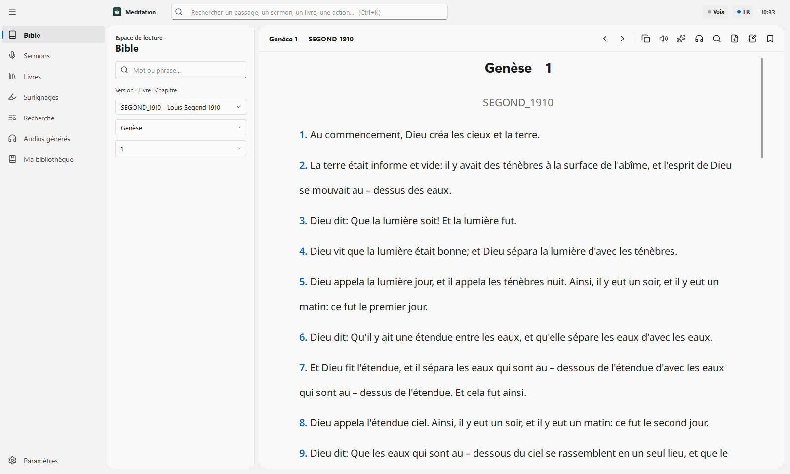
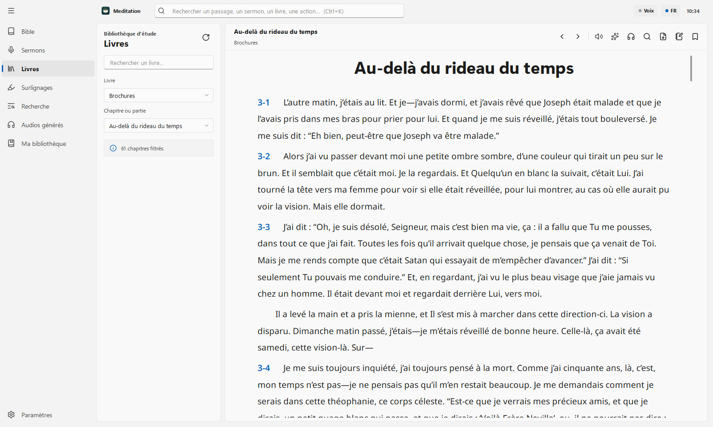
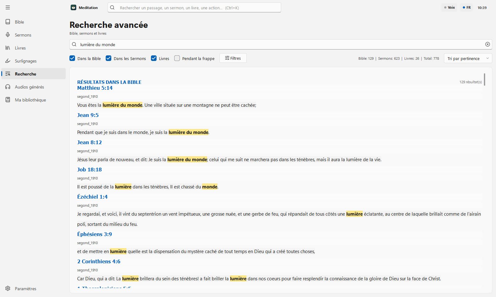
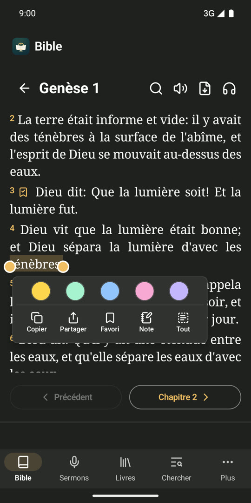
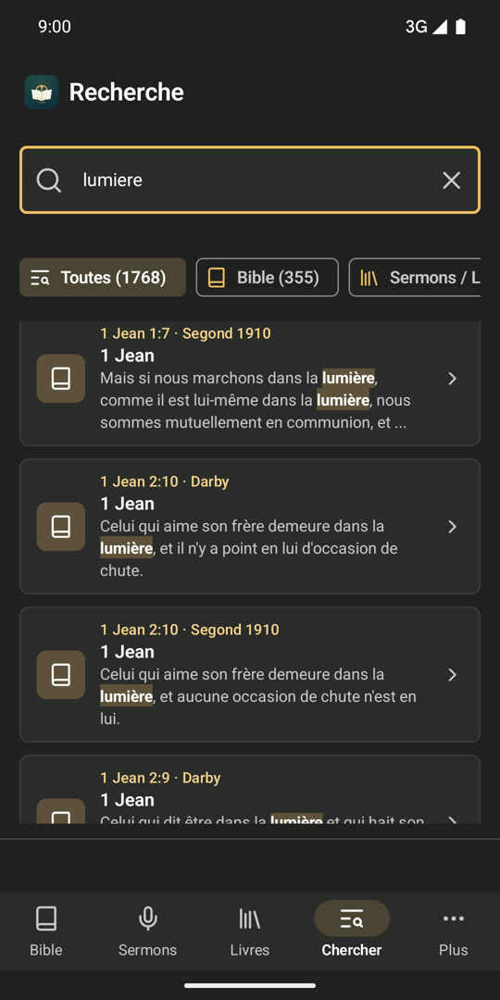
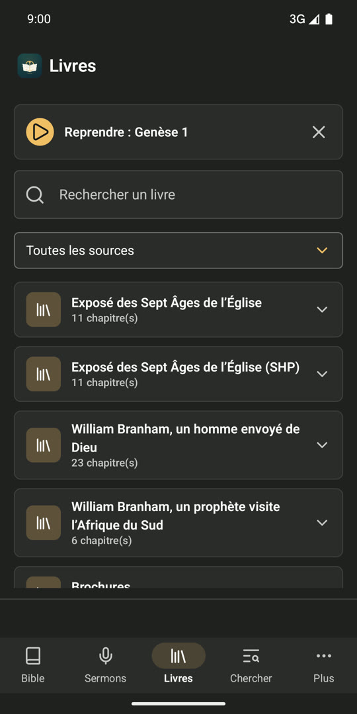
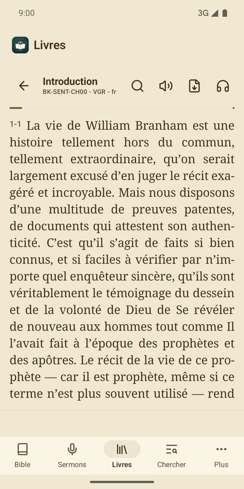
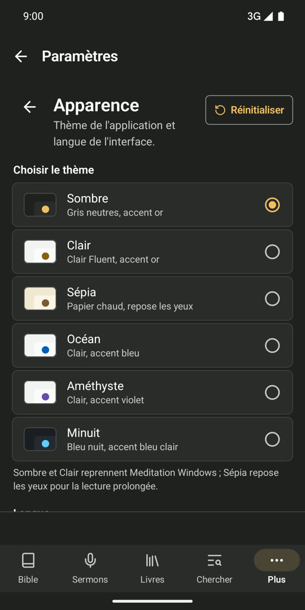

Bible multi-versions
Navigation par livre et chapitre, plage de versets, copie et surlignage.
Étude biblique, sur PC et téléphone
La Bible, les sermons et les livres dans une bibliothèque qui tient dans la poche. Cherchez, surlignez, écoutez : tout fonctionne sans Internet.


Fonctions
Navigation par livre et chapitre, plage de versets, copie et surlignage.
Filtres par langue, traducteur et année, paragraphes numérotés, recherche profonde dans le texte.
Livres et brochures à lire avec vos réglages de police et de taille.
Une seule recherche dans la Bible, les sermons et les livres, avec filtres et historique. Ctrl+K sur Windows.
Surlignages en couleur partout, réunis au même endroit et exportés en PDF ou Word.
Des voix françaises naturelles vous lisent le texte, sans connexion Internet.
Sur Android : notes personnelles et favoris, rangés dans des dossiers.
Partagez un chapitre, un sermon ou vos surlignages en PDF.
Thèmes clair, sombre (et sépia sur Android), polices, tailles et interligne.
Captures








Caractéristiques
FAQ
Non, ni pour lire, ni pour chercher, ni pour écouter. Sur Android, le pack de contenu se télécharge une seule fois à l'installation.
Non. Tout reste sur votre appareil. Vous choisissez ce que vous exportez ou partagez en PDF.
Meditation sert à l'étude personnelle. Project-On sert à projeter la Bible et les cantiques pendant le culte.
Gratuit sur Android et Windows. Partagez-le avec votre église.